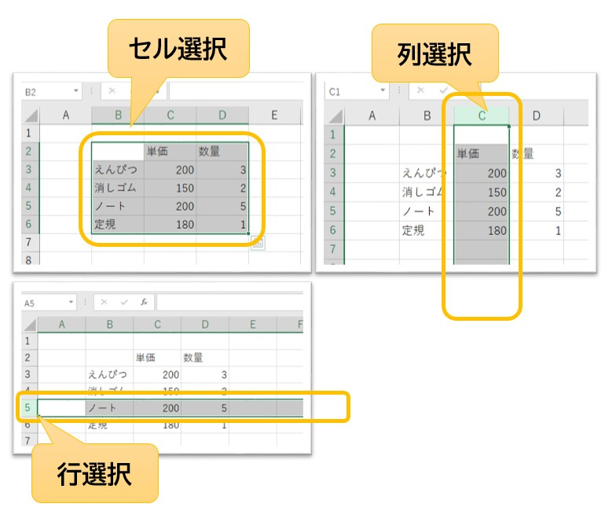
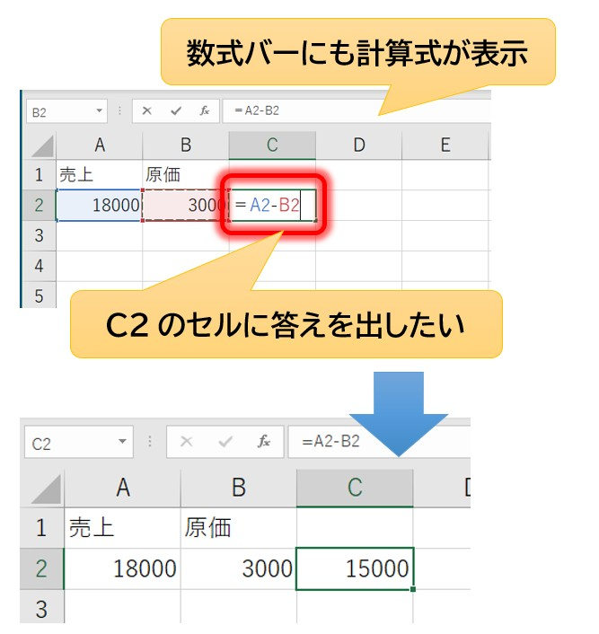
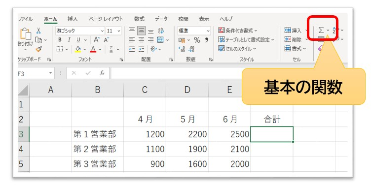
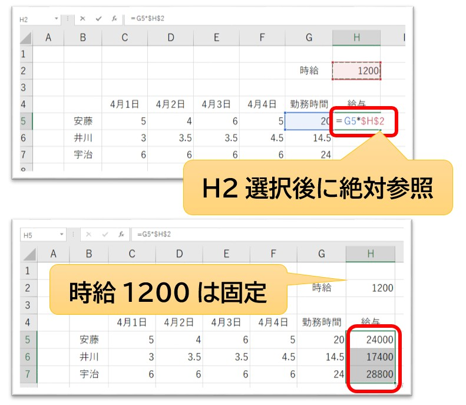
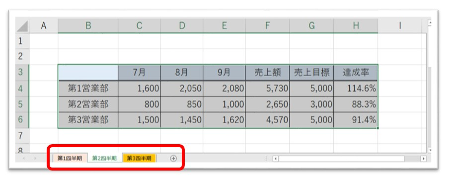
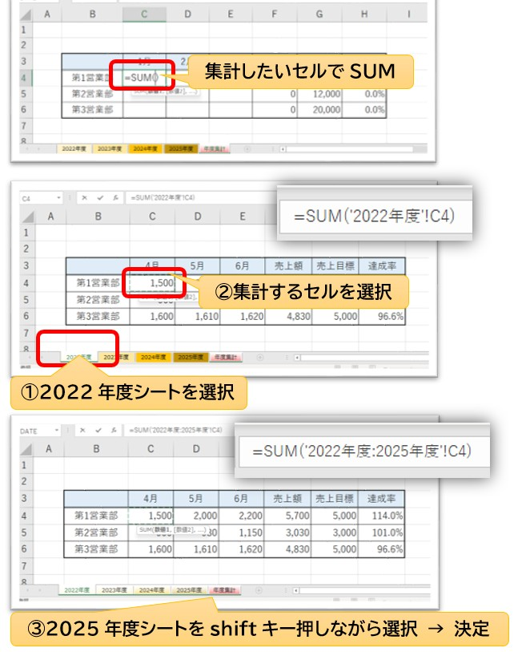

実際に仕事で困らないためのExcel講座
現役講師が教える、情報を整理・計算・管理するための本質的な考え方
Microsoft Excel（エクセル）は、事務職をはじめ、現代の仕事において最も広く使われているソフトのひとつです。しかし、初めてExcelに触れる方の多くは「計算が難しそう」「数学が得意じゃないと使いこなせないのでは？」と不安を抱いています。
結論からお伝えすると、Excelを使いこなすために数学の才能は必要ありません。Excelは、計算という「面倒で間違いが起きやすい作業」を人間に代わって引き受けてくれる、頼もしい相棒のような存在です。
このページでは、現役パソコン講師が実際に授業で説明するように、専門用語を噛み砕き、「なぜその操作をするのか」という実務の理由を添えて、一歩ずつ解説していきます。読了後には、きっとExcelが少し好きになっているはずです。
Excelとはどのようなソフトなのか
Excelを単なる「表を作るソフト」だと思っていませんか？ 確かにきれいに罫線を引いた表を作ることができますが、それはExcelが持つ機能の一部に過ぎません。
Excelの本質は、「情報を整理・計算・管理するソフト」です。

▲ 見積書や売上管理など、実務のあらゆる場面でExcelは活躍します
Wordとの最大の違いは、入力された情報同士を関連付けて「自動で計算させる」ことができる点です。例えば見積書において、数量を書き換えた瞬間に、消費税や合計金額までが一瞬で更新される。こうした正確でスピーディな処理が、職場でExcelが求められる最大の理由です。
実務でExcelが使われる主なシーン
- お金の管理： 見積書、請求書、売上集計、経費精算。
- 時間の管理： 勤務表、シフト表、スケジュール管理、工程表。
- 情報の管理： 顧客リスト、住所録、在庫管理、備品管理。
- 分析： アンケート集計、グラフ作成、昨対比の算出。
仕事で扱う数字やリストのほとんどは、Excelという土台の上で動いています。Excelが得意になれば、あなたの業務効率は劇的に上がり、周囲からの信頼も厚くなるでしょう。
Excelでは、1つのファイルを「ブック（本）」、その中の各ページを「ワークシート（紙）」と呼びます。 「1年間の売上」というブックの中に、「1月分」「2月分」……とシートを分けることができます。まずは、大きな1冊の本の中に、何枚もの紙が挟まっているイメージを持っておきましょう。
Excel画面の見方と基本操作
操作を覚える前に、画面の各部分の名前を覚えましょう。職場での指示は「数式バーを見て」や「名前ボックスを確認して」のように用語で行われるため、これらを知っておくことがコミュニケーションの基礎になります。

▲ Excel特有のパーツ（数式バーや名前ボックス）が操作の鍵を握ります
- リボン： 画面上部のメニューエリアです。計算、装飾、配置などのボタンが集まっています。
- 名前ボックス： 現在どのマス目を選んでいるかを表示します。
- 数式バー： 選択しているセルの「中身（正体）」を表示する非常に重要な場所です。
- 行（ぎょう）と列（れつ）： Excelのマス目を形作る縦と横の並びです。
- シートタブ： 画面下部。ここで複数のワークシートを切り替えます。
Excelは数字ではなくセル番地を使って計算する
ここが、本講座で最も重要な「Excelの本質的な考え方」です。初心者はExcelを「数字を計算するソフト」だと思い、100＋200のような計算式を入れようとします。しかし、実務ではこれは「我流」の域を出ません。
プロの事務スタッフは、Excelを「セル番地（セルの住所）を計算するソフト」だと考えています。
- 列： 縦方向の並び。アルファベット（A, B, C...）で表されます。
- 行： 横方向の並び。数字（1, 2, 3...）で表されます。
- セル番地： 列と行を組み合わせて「A1」「B5」のように呼びます。これが各セルの住所です。
例えば「A1番地の数字とB1番地の数字を足す」という命令を出しておけば、後からA1の数字を書き換えたとしても、Excelが自動で「住所の中身が変わったな」と判断し、合計を計算し直してくれます。 この「住所（セル番地）で計算する」という感覚を掴むことが、Excelが自在に扱えるようになるかどうかの分かれ道となります。
Excelの広大なシートの中で、「今自分がどこを触っているかわからない！」となったら、左上の「名前ボックス」を見てください。そこに「D10」とあれば、あなたはD列の10行目を選んでいることが一瞬でわかります。
データ入力の基本と正確な編集方法
Excelでの作業は、セルに文字や数字を打ち込むことから始まります。一見、簡単そうに見えますが、Excelには「入力された情報の種類を自動で判別する」という賢い（時にお節介な）機能があります。この仕組みを理解していないと、後の計算でエラーが起きる原因となります。

▲ 入力した情報の「正体」は、セルの配置で見分けることができます
数値と文字列の決定的な違い
Excelでは、入力したものが「計算に使える数字（数値）」か「ただの文字（文字列）」かを厳密に区別しています。
- 数値： セルの「右側」に寄ります。計算に使用できます。
- 文字列： セルの「左側」に寄ります。計算には使用できません。
例えば、数字の前に全角のスペースを入れたり、数字の後ろに「円」と入力したりすると、Excelはそれを「文字列」と判断して左側に寄せます。そうなると、いくら合計を出そうとしても計算結果はゼロになってしまいます。数字は数字だけを入力するのが、Excelの鉄則です。
日付の入力にはルールがあります
日付を入力する際は「2026/6/30」のように、スラッシュ（/）で区切って入力しましょう。こうすることで、Excelはそれを日付データとして認識し、「1週間後の日付を出す」といった計算や、カレンダー形式への並べ替えが可能になります。
入力した内容を少しだけ直したい時、セルをダブルクリックしていませんか？ 実務では、セルを選んで F2 キー を叩くのが標準です。マウスに持ち替える手間が省け、入力ミスを劇的に減らすことができます。また、間違えて入力し始めた時は Esc キー を押せば、入力を取り消して元の状態に戻せますよ。
セル・行・列を自在に操作する技術
Excelのシートを自由に操るためには、範囲選択のバリエーションと、行列のサイズ調整をマスターする必要があります。これらは「情報の見やすさ」に直結する重要なスキルです。

▲ 目的に合わせた最適な選択方法を使い分けましょう
効率的な範囲選択のテクニック
- 範囲選択： セルの中央からマウスをドラッグします。
- 離れた場所を選択： Ctrl キーを押しながらクリックします。離れたセルの色を一気に変えたい時に便利です。
- 行・列全体の選択： 上部のアルファベット（列）や左端の数字（行）をクリックします。
- シート全体の選択： Ctrl + A、または左上の三角マークをクリックします。
列幅と行高さの自動調整
入力した文字が長すぎて、隣のセルにはみ出したり、隠れてしまったりすることがあります。そんな時は、列の境界線をダブルクリックしましょう。Word講座で学んだ「揃える」意識をExcelでも持ち、「情報が欠けていない、読みやすい幅」に整えるのが実務の作法です。
データの途中に新しい項目を入れたい時は、行番号や列番号を右クリックして「挿入」を選びます。逆に不要なデータは「削除」します。この際、Backspaceキー（中身を消すだけ）と「削除」（箱ごと消す）の違いを意識しましょう。
データの保存と用途に応じたファイル形式
作成した大切なデータを守るために、保存は適切な形式で行う必要があります。Excelにはいくつかの保存形式がありますが、実務で使うのは主に2種類です。
Excelブック（.xlsx）
Excelの標準的な保存形式です。計算式や書式、複数のシートをすべて保持したまま保存されます。自分で編集を続ける場合や、チーム内でデータを共有する場合は、常にこの形式（拡張子 .xlsx）を使用しましょう。なお、20年以上前の古いExcel形式（.xls）は、最新の機能が使えなくなる恐れがあるため、特別な理由がない限り避けるのが賢明です。
PDF形式での書き出し
Word講座でも触れましたが、ExcelにおいてもPDFは非常に重要です。見積書や請求書をメールで送る際、Excelファイルのまま送ると、相手の環境でレイアウトが崩れたり、誤って数字を書き換えられたりするリスクがあります。「完成した成果物を渡す時はPDF」という使い分けを徹底しましょう。
保存する際は、後から見ても内容がわかる名前を付けましょう。 「20260630_売上集計表_miitype.xlsx」のように、「日付・内容・作成者」のルールを決めておくと、数ヶ月後の自分が助かるだけでなく、職場の仲間からも「仕事が丁寧な人だ」と評価されます。
数式の基本：Excelに計算の命令を出す
Excelの本当の力は、セルに入力されたデータを使って「計算」をさせることにあります。初心者が最も早く卒業すべきは「電卓で計算した結果をセルに入力する」という行為です。Excel自身に計算を任せることで、ミスを防ぎ、修正に強い表を作ることができます。

▲ 「数字」ではなく「場所」を計算する。これがExcelの基本ルールです
数式は必ず「＝」から始まります
Excelに「これから計算をしますよ」と伝えるための合言葉が「＝（イコール）」です。セルを選択し、最初にキーボードから「＝」を入力することで、Excelは計算モードに切り替わります。
セル番地を計算するという考え方
例えば、A2番地に単価、B2番地に数量が入っているとします。合計金額を出したいとき、頭の中で計算して「5000」と打ってはいけません。Excelに対して以下のような命令を出します。
＝A2＊B2
これは「A2番地の中身と、B2番地の中身を掛け算してください」という意味になります。このようにセル番地を指定することを「参照（さんしょう）」と呼びます。番地で計算しておけば、後から「数量が5個から10個に増えた」という場合でも、B2の数字を書き換えるだけで、合計金額は自動的に再計算されます。
- 足し算： + （プラス）
- 引き算： - （マイナス）
- 掛け算： * （アスタリスク）
- 割り算： / （スラッシュ）
※掛け算が「×」ではなく「＊」であることに注意しましょう。事務現場ではテンキーの記号を使いこなすのが一般的です。
オートフィルで入力を劇的に効率化する
1行目の数式が完成したら、2行目、3行目……と同じ計算式を手入力する必要はありません。Excelには「オートフィル」という、魔法のような連続コピー機能が備わっています。

▲ セルの右下にある小さな四角（フィルハンドル）が効率化の鍵です
オートフィルでできること
セルの右下にマウスポインターを合わせると、形が「黒いプラス記号」に変わります。これを下にドラッグすることで、以下のような処理が一瞬で完了します。
- 数式のコピー： 1行目の「＝A2*B2」を2行目では「＝A3*B3」というように、Excelが気を利かせて番地をずらしながらコピーしてくれます。
- 連続データの作成： 「1、2、3……」といった連番や、「月、火、水……」といった曜日、日付などを自動で埋めることができます。
オートフィルをした直後、右下に小さなアイコン（オートフィルオプション）が出現します。ここをクリックすると、「書式なしでコピー（色や枠線を壊さずに中身だけコピー）」などの細かい調整が可能です。意図しないデザイン崩れを防ぐために覚えておくと非常に便利な機能ですよ。
基本関数を使って高度な集計を自動化する
数式をさらに便利にしたものが「関数（かんすう）」です。複雑な計算を、あらかじめ決められたキーワード（名前）で呼び出すことができます。事務職で使われる関数の8割は、これから紹介する基本の5つでカバーできます。
SUM関数（合計）
仕事で最も使われる、関数の王様です。売上集計、請求書、勤務表など、実務で合計を出さない場面はありません。 「＝A1+A2+A3...」と1つずつ足すのではなく、「＝SUM(A1:A10)」と書くことで、指定した範囲を一気に合計できます。
AVERAGE関数（平均）
テストの平均点、1日の平均売上、平均残業時間など、データの傾向を分析する際に使用します。合計を個数で割るという電卓作業を、Excelが1秒で代行してくれます。
COUNT関数とCOUNTA関数の違い
ここは講習でもよく質問を受ける「初心者がつまずきやすいポイント」です。
- COUNT（カウント）： 数値が入っているセルの数だけを数えます。売上の件数などを出す時に使います。
- COUNTA（カウンタ）： 空白以外のすべてのデータ（文字も含む）を数えます。出席名簿の人数などを数える時に重宝します。

▲ [ホーム]タブの「オートSUM（Σ）」ボタンを使えば、関数を素早く入力できます
大量のデータの中から「一番高い売上」や「一番低い気温」を瞬時に見つける関数です。在庫管理や成績管理などで、極端な数値を見逃さないために活用されます。
関数を覚えるコツは、その英単語の意味をイメージすることです。SUMは合計、AVERAGEは平均。そして、どの範囲を計算するかを（ ）の中に指定するだけです。 まずは「＝SUM( )」を使いこなせるようになること。それだけで、あなたのExcelスキルは「初心者」から「実務者」へと一歩前進します。
数式をコピーしても正しく計算する仕組み
オートフィルで数式をコピーした際、Excelは気を利かせて計算対象の番地を1行ずつずらしてくれます。これを「相対参照（そうたいさんしょう）」と呼びます。しかし、実務では「特定の場所だけはずらしたくない」という場面が必ず出てきます。

▲ 消費税率や単価など、1か所のセルを使い回す時は「固定」が必要です
絶対参照とF4キーの活用
例えば、すべての商品の金額に「消費税率が入ったセル」を掛けたい場合、数式をコピーしても税率の場所が動かないように固定しなければなりません。この固定することを「絶対参照（ぜったいさんしょう）」と呼びます。
固定したいセル番地（例：C1）にカーソルを合わせ、キーボードの F4 キー を1回押してください。すると番地が「$C$1」という表示に変わります。この「$」マークが、Excelにおける「ここを動かさないで！」というロックの印です。
この「絶対参照」は、Excel学習における最初の、そして最大の壁です。講習でも「なぜドルマークが付くの？」と混乱される方が多いですが、理屈を覚えるよりもまずは「1か所をみんなで使い回す時はF4でロックする」というルールを指に覚えさせてしまいましょう。これができるだけで、複雑な見積書も正確に作れるようになります。
表の見た目を整える書式と表示形式
計算が正しくできても、見た目が整っていない表は実務では評価されません。Word講座で学んだ「揃える」意識をExcelでも発揮しましょう。特にExcel特有の「数値の見せ方」が重要です。

▲ [ホーム]タブの「表示形式」で、数字を「金額」や「日付」に変えられます
桁区切りのコンマと単位の表示
大きな数字を扱うビジネス文書では、「桁区切り（,）」は必須のマナーです。「1000000」と「1,000,000」では、読みやすさが天と地ほど違います。リボンのコンマボタンを1回押すだけで設定できるため、必ず習慣にしましょう。
セル結合と配置の注意点
複数のセルをまとめて大きなタイトルを作る「セル結合」は便利ですが、使いすぎには注意が必要です。Excelをデータベースとして使う場合、セル結合があると並べ替えや集計が正しく行えない原因となるからです。見た目の美しさと、データの扱いやすさのバランスを考えましょう。
複数のシートを活用してデータを管理する
1つのブック（ファイル）の中に、複数の「ワークシート」を作成できます。月ごとの売上や、部署ごとの集計など、情報を切り分けて管理する際に活用します。

▲ 画面下のシートタブをダブルクリックして、わかりやすい名前を付けましょう
- シートの追加： 画面下の「＋」ボタンをクリックします。
- 名前の変更： タブをダブルクリックして、「1月」「2月」のように中身がわかる名前にします。
- 色の変更： タブを右クリックして「シート見出しの色」を選びます。重要なシートを赤くするなど、一工夫でミスを防げます。
- シートのコピー： Ctrl キーを押しながらタブを右にドラッグすると、全く同じレイアウトのシートを複製できます。毎月の報告書を作る際に非常に重宝します。
シートをまたいで集計する3D集計の技術
「1月」から「12月」までのシートが揃ったら、最後にそれらを合計した「年間集計」のシートが必要になります。このように、複数のシートを貫通して計算することを「3D集計（串刺し集計）」と呼びます。

▲ 全シートの同じ番地を合計することで、一瞬で年間集計が完了します
3D集計を行うための絶対条件は、「すべてのシートのレイアウト（表の形）を統一しておくこと」です。例えば1月の売上が「B2」にあるなら、2月も12月も「B2」に売上を入れておく必要があります。こうすることで、「＝SUM('1月:12月'!B2)」という1つの式で、全期間の合計を算出できるようになります。
勤務表で「個人別の月間シート」をまとめて「部署全体の集計」を作ったり、店舗別の売上を「会社全体の合計」にまとめたりする場面で威力を発揮します。データの形を揃えておくことの大切さが、ここで活きてきます。
Excelをデータベースとして活用する管理術
実務において、Excelは計算だけでなく「大量の情報を管理する」ためにも使われます。住所録や在庫リストなど、データの集まりを整理する際は、Excelを「データベース」として扱う意識を持つことが、仕事の正確性を高める鍵となります。

▲ フィルターを使えば、膨大なデータから必要な情報だけを瞬時に取り出せます
並べ替えとフィルターで情報を操る
- 並べ替え： 売上の高い順や、名前のあいうえお順にデータを整列させます。この際、必ず「表の中のどこか1つのセル」を選んでから実行しましょう。
- フィルター： 「東京都の顧客だけを表示する」といった抽出が可能です。データの山から欲しい情報を見つけ出す、実務で最も多用する機能のひとつです。
- 入力規則： 「このセルにはリストから選んで入力してほしい」という場合に、ドロップダウンリスト（プルダウン）を作成できます。入力ミスを未然に防ぐための重要な仕組みです。
データの塊を [挿入] タブから 「テーブル」 に変換してみてください。見た目が一瞬で整うだけでなく、フィルターが自動で付き、データの追加に合わせて数式が自動で拡張されるようになります。実務で「データが壊れにくい表」を作るための最も安全な方法です。
視覚的に伝えるグラフと失敗しない印刷設定
数字の羅列だけでは伝わらない情報も、グラフにすることで一瞬で理解を助けることができます。また、Excel最大の難関と言われる「印刷」についても、正しい手順を確認しましょう。

▲ グラフで見やすく、印刷設定で正しく届けることが、成果物の品質を決めます
グラフ作成の基本は「縦棒グラフ」から
多くのグラフ形式がありますが、実務で最も使われるのは「縦棒グラフ」です。売上の推移などを表現するのに最適です。範囲を選択して [挿入] タブからグラフを選ぶだけで作成できます。まずはタイトルを適切な名前に変更することから始めましょう。
印刷プレビューによる最終確認
Excelの印刷は、画面で見ている通りにいかないことが多々あります。必ず Ctrl + P で印刷プレビューを確認してください。「端っこの1列だけが2枚目にはみ出している」といった、もったいないミスを防ぐことができます。
「どうしても用紙1枚に収めたい！」という時は、[レイアウト] タブの「ページ設定」にある「拡大縮小印刷」を確認してください。横幅を「1ページ」に設定するだけで、Excelが自動で縮小して美しく収めてくれます。
実務で初心者が陥りやすい失敗と対策
講習の現場でよく目にする、上達を妨げてしまう惜しい失敗例と、その解決策をまとめました。これらを意識するだけで、あなたのPCスキルへの信頼度は格段に向上します。
- 思い通りにいかない時に無理に修正する：
設定を変えてみて「思った動きと違う」と感じたら、手作業で直そうとせず、すぐに Ctrl + Z を押して時間を戻しましょう。時間を巻き戻す技術こそが、デキる実務者の共通点です。 - 数値を「文字列」として入力してしまう：
数字の前にスペースを入れたり、後ろに「円」を直接打ったりすると、Excelは計算を放棄します。数字は数字だけを入力し、単位やコンマは「表示形式」の設定に任せるのがExcelの作法です。 - 数式を直接数字へ書き換えてしまう：
合計が出た後に「この合計だけ書き換えたい」と直接数字を打ち込むのは非常に危険です。せっかく組んだ自動計算の仕組みが壊れ、後の修正に対応できなくなります。必ず「元のデータ」を修正することを徹底してください。
データの保存ルールと拡張子の重要性
作成した大切なデータを守るために、保存は適切な形式で行う必要があります。現在のExcelで保存すると、ファイル名の末尾に「.xlsx」という拡張子が付きます。これが最新の標準形式です。稀に「.xls」という古い形式のファイルを見かけることがありますが、これは20年以上前の古い形式であり、最新の機能が使えなくなる恐れがあるため注意しましょう。
また、保存時のファイル名も重要なスキルです。「20260630_月次売上報告_担当者名.xlsx」のように、「日付・内容・作成者」のルールを決めて名前を付けることで、数ヶ月後の自分が助かるだけでなく、チーム内での信頼も勝ち取ることができます。
Excel学習のまとめ
Excelは単なる「計算機」ではなく、「情報を正確に整理し、未来の判断を助けるための設計図」です。初心者のうちは、最初からすべてを覚える必要はありません。以下のステップを大切にしてみてください。
- Excelは「数字」ではなく「セル番地（住所）」を計算している
- 「＝」から始まる命令で、計算をExcel自身に任せる
- 見た目の美しさとデータの正確さ（数値と文字列の区別）を両立させる
- 困ったときは Ctrl + Z で落ち着いてやり直す
一度に完璧を目指す必要はありません。まずは毎日少しずつタッチタイピングを練習し、Excelで何か一つ「自分のための表」を作ってみることから始めてみましょう。その一歩が、就職・転職後の大きな自信と誇りに繋がります。